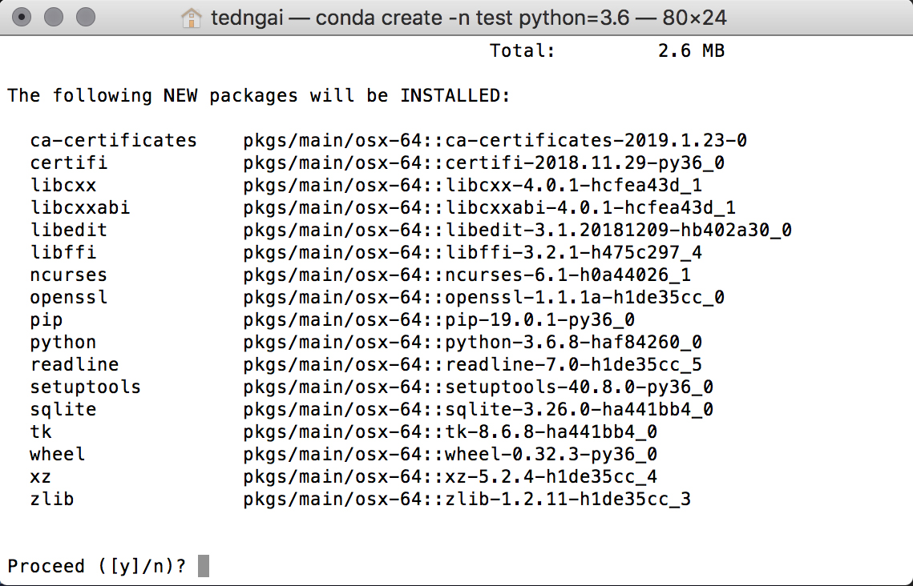
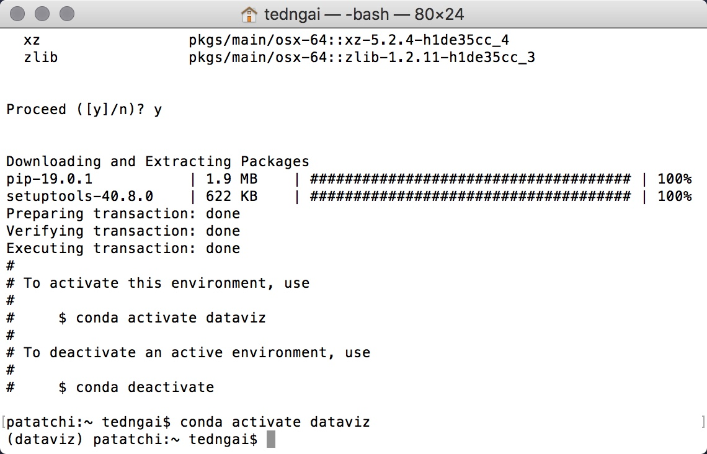
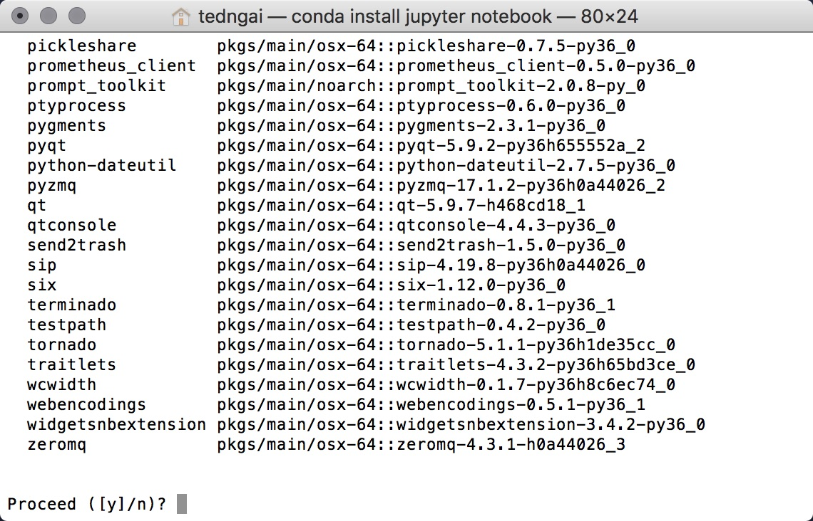
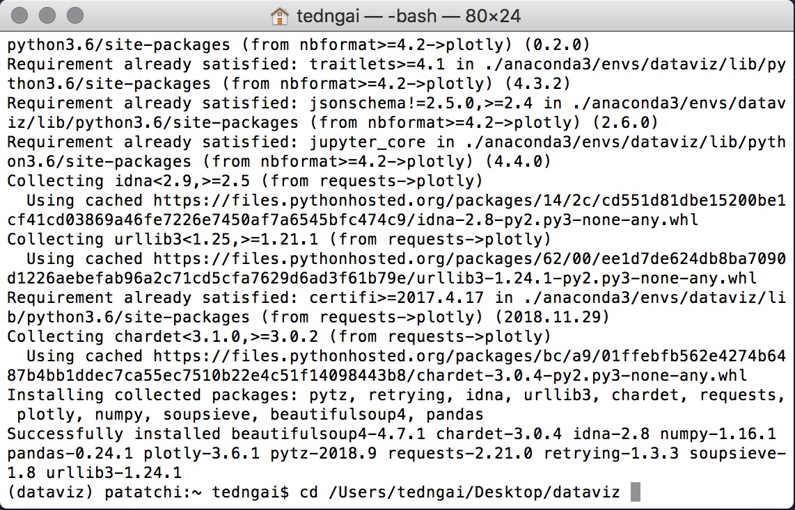
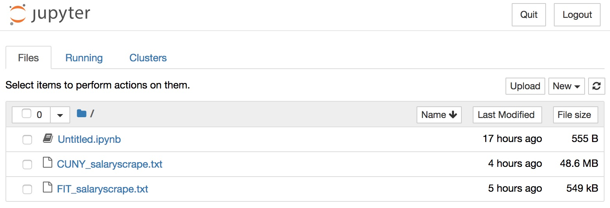
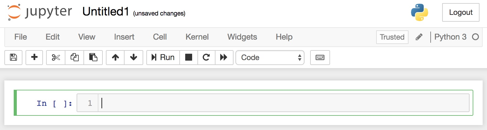

Project Description
This module is preparation for the data visualization with Python workshop. No programming background is required. In this installation module, you will follow step-by-step instructions to install python and some of the most popular data processing / visualization libraries we will be suing for this workshop. You will be using Anaconda as a Python management software that is cross platform, thus all the instructions are the same between Windows, OSX and Linux.
Step 1
Python Installation
First you want to to install Anaconda. Go to the website and download the Anaconda Installer, you want to go with Python 3 and the current version as of writing is Python 3.7.
Once you have downloaded and installed Anaconda, open a Terminal if you’re on OSX or an Anaconda Prompt if you’re on Windows.
You want to create a Virtual Environment for this exercise. The purpose of virtual environment is to create an isolated environment to contain all the packages you will install. What that literally means is everything you install, all the libraries and packages, including the python version, will be stored in a separate folder. There many reasons why this is a good practice. Since python is used from machine learning to webscraping to data visualization, sometimes you will encounter an application such as GIS that will require python version 2.7, whereas the machine learning framework from Google Tensorflow will only work with python version 3.5 (as of writing, the GPU optimized version only works with Python 3.5 if you use a particular GPU hardware). So virtual environment is a very convenient way to isolate and manage your python installations.
To create a virtual environment in Anaconda , in the Terminal or Anaconda Prompt , type:
conda create --name dataviz python=3.6

When asked to proceed, click Y and press Enter. For a more in-depth write up on Anaconda Environments, press the button below for a deep-dive into the subject.
Now that you have Anaconda and Python running in your system, you want to activate the environment you just created and then start installing all the packages that we will use in this workshop. First activate the environment by typing this in the Terminal or Anaconda Prompt.
conda activate dataviz
If you’re successful in activating the virtual environment, you should see the name of the enviroment appear in brackets. And congratulations, you are now ready to dive into the vast and exciting world python libraries.

Step 2
Jupyter Notebook Installation
Next we will install Jupyter Notebook by typing the following command in Terminal or Anaconda Prompt, and type Y when asked to Proceed.
conda install jupyter

Jupyte Notebook is an Interactive Computing Environment that allows your to get immediate feedback when coding, and it is a full featured Python IDE that automatically formats your code properly. It makes programming much more visual and intuitive and we will use it exclusively in our workshop.
Installing Other Python Packages
Next we will install Plotly, Numpy, Beautifulsoup, SCIKIT-Learn, Matplotlib and Pandas by typing the following command in Terminal or Anaconda Prompt.
conda install plotly pandas numpy scikit-learn matplotlib basemap netcdf4
pip install beautifulsoup4
Plotly is a dynamic graphing web application. It lets you make beautiful interactive plots easily.
Numpy is a library that deal with multidimensional arrays or matrices, it’s an essential library for many scientific computing and image processing applications.
Beautifulsoup is a webscraping module that lets you access and collect data online easily.
SCIKIT-Learn is an essential toolkit for data processing and machine learning.
Matplotlib is a graphing library that handles much of the non-dynamic graphics
Basemap is a graphing library that handles much of the non-dynamic graphics
Pandas is a library for data processing.
Step 3
Launch Jupyter Notebook
Next, we create a folder where all the coding files will reside. In my case, I’ll create a folder on my desktop call dataviz. You can do that where ever you want. Once the folder has been created, go back to your Terminal or Anaconda Prompt, then type cd and then type in the path to your newly created folder, then press Enter. *If you don’t like typing the full path of your folder by hand, follow this tip.
cd /Users/tedngai/Desktop/dataviz

Once you’re in your newly created folder, launch Jupyter Notebook by typing the following. It will launch your web browser and should open the web app, and you should see Jupyter and your current folder location.
(dataviz)patatchi:Dataviz tedngai$ jupyter notebook

Last but not least, click the New button at the near top right and click on Python 3 to create a new notebook. And congratulations, if you are able to get to this point, you are all set to do some exciting programming. If you have trouble getting things to work thus far, please carefully review the steps and make sure you have your virtual environment activated and you are in the proper folder. If you continue to have problem, please feel free to contact us via Slack or email.

Summary
What You have Accomplished
- How to install Anaconda and Python
- How to install any Python libraries
- How to launch and work with Jupyter Notebook